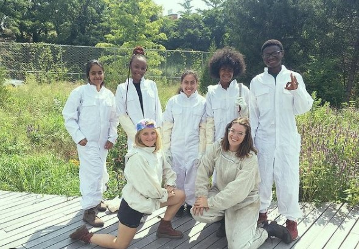

Hello, I'm Fabiha! I'm a South Asian and first generation freshman at Barnard College. I'm an engagement ambassador at Columbia University and am curently interested in neuroscience and CS. With a passion in neuroscience, biology, chemistry, and healthcare, I plan on pursuing a career in medicine. I've graduated from Bard High School Early College Queens with an high school diploma and an associates degree in libral arts. Exploring has always been a passion of mine. I love exploring new places, academic fields, and aquiring new knowledge and experiences. I'm a lover of expression. Art, music, and photography are ways through which I express my style, beliefs, and inner emotion. I enjoy contributing to the wellness of the community through my art and passion for medicine and healthcare. However, I am seeking to find other ways, such as programming and technology, that I could use my interest in art and science to contribute to the world around me!
ResuméI've been doing photography for the past six years and have recently been into creative portraits. I've always loved the clothing and the idea of female artist representation in my culture, and thus I showcase that through my creative photography. In my photography, I try to combine art and various color schemes and lighting to express various emotions.


Art is something that I identify with since I was seven years old. I aim to put value in my art by using it to spread human rights and mental health messages.


In 2019, I participated in Bronx Community College's NSF-SWIP program at its Geospatial Center. Collaborating with a group of six students, I've utilized the ArcGIS software and census data create multiple maps of the quality of life in four counties in the USA.
Historical Research Paper on The Bangladesh Liberation War:
The Role of Women and Gender InequalityMaterial Culture:
Women and the SariArt and Phylosophy:
Dialectical Thinking and the Graphics in PersepolisI know how to bee keep!
- My bee keeping team
- Doing a beehive inspection
- A beehive smoker!